golang LogAgent 项目实战（四）
本文主要记录了学习golang时做的一个项目：日志收集项目。
关键词：日志收集项目
日志收集项目
上次进度
- kafka：消息队列
- tailf：从文件里读取文件
- go-ini：解析配置文件
为什么不用ELK？
ELK：部署的时候比较麻烦，每一个filebeat都需要配置一个配置文件
使用etcd来管理被收集的日志项。
- 每次logagent都会主动从etcd中拉取配置，免去了手动写配置项的麻烦；
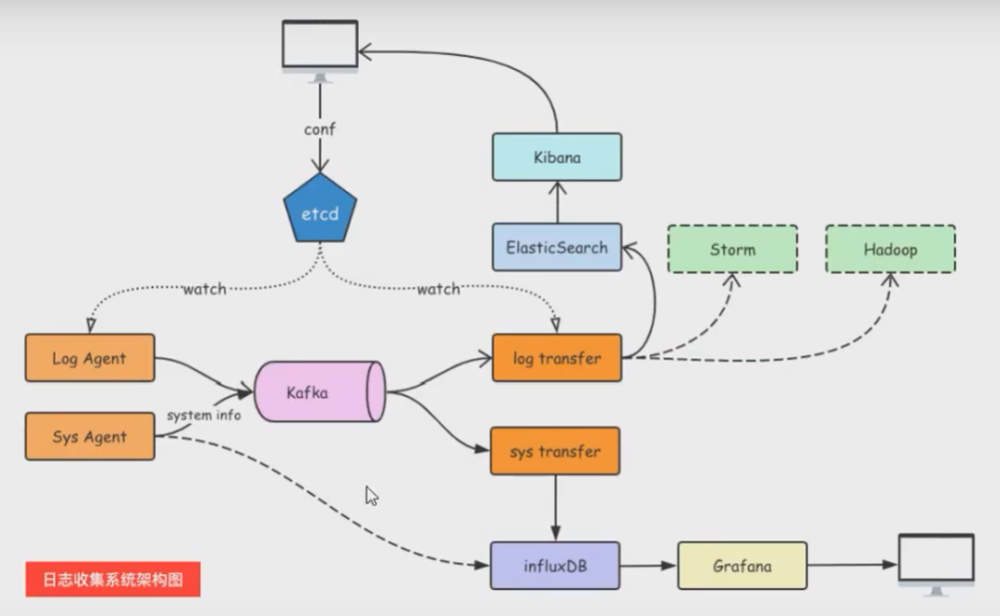
etcd
etcd介绍
etcd是使用Go语言开发的一个开源的、高可用的分布式key-value存储系统，可以用于配置共享和服务注册发现。
类似的项目由zookeeper和consul。
etcd具有以下特点：
- 完全复制：集群中的每个节点都可以使用完整的存档
- 高可用性：etcd可用于避免硬件的单点故障或者网络问题
- 一致性：每次读取都会返回跨多主机的最新写入
- 简单：包括了一个定义良好、面向用户的API（gRPC）
- 安全：实现了带有可选的客户端证书身份验证的自动化TLS
- 快速：每秒10000次写入的基准速度
- 可靠：使用Raft算法实现了强一致、高可用的服务存储目录
- Raft协议
- 选举
- 日志复制机制
- 异常处理（脑裂）
- zookeeper的zad协议的区别
- etcd的watch是怎么实现的？
- etcd底层如何实现watch给客户端发通知的
- Raft协议
etcd应用场景
服务注册发现
服务发现要解决的也是分布式系统常见的问题，即在同一个分布式集群中的进程或服务，要如何才能找到对方建立连接。
本质上说，服务发现就是想要了解集群中是否有进程在监听tcp或者udp端口，并且通过名字就可以查找和连接。
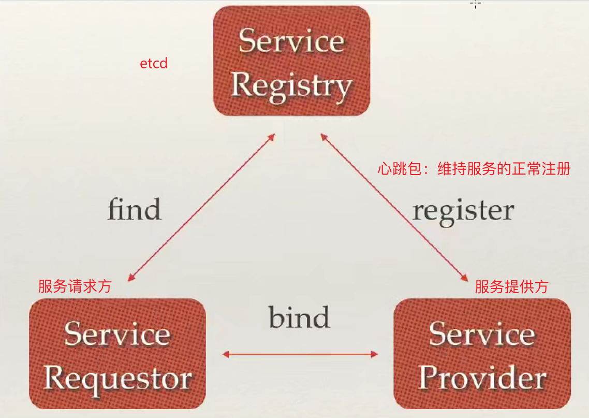
配置中心
将一些配置信息放到etcd上进行集中管理。
通常的应用场景：应用在启动的时候主动从etcd获取一次配置消息，同时，在etcd节点上注册一个Watcher并等待，以后每次配置有更新的时候，etcd都会实时通知订阅者，以此达到获取最新配置信息的目的。
分布式锁
因为etcd使用Raft算法保持了数据的强一致性，某次操作存储到集群中的值必然是全局一致的，所有很容易实现分布式锁。锁服务有两种使用方式：一是保持独占，二是保持时序。
- 保持独占即所有获取锁的用户最终只有一个可以得到。etcd提供了一套实现分布式锁原子操作CAS(
CompareAndSwap)的API。通过设置
prevExist值，可以保证在多个节点同时创建某个目录时，只有一个成功。创建成功的用户就可以认为是获得了锁。 - 控制时序，即所有获得锁的用户都会被安排执行。但是获得锁的顺序全局唯一，同时决定了执行顺序。etcd提供了一套API（自动创建有序键），对一个目录建值时指定为POST动作，这样etcd会自动在目录下生成一个当前最大的值为键，存储这个新的值（客户端编号）。同时还可以使用API按顺序列出当前目录下的键值。此时这些键的值就是客户的时序，而这些键存储的值可以是代表客户端的编号。
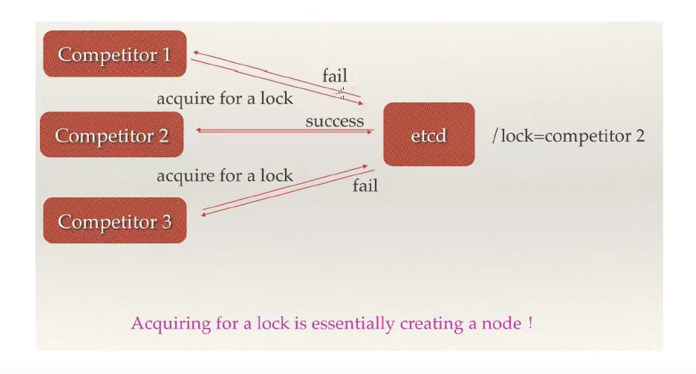
为什么用etcd而不用zookeeper？
etcd实现的这些功能，zookeeper都能实现，那为什么要用etcd而不是直接使用zookeeper呢？
相较之下，zookeeper有以下缺点：
- 复杂。zookeeper的部署维护复杂，管理员需要掌握一系列的知识和技能；Paxos强一致性算法素来以复杂难懂而闻名于世；zookeeper的使用也比较复杂，需要安装客户端，而且只提供了Java和C语言的两种接口。
- Java编写。Java本身偏向于重型应用，引入大量的依赖。而运维人员则普遍希望保持强一致、高可用的机器集群尽可能简单，维护起来不容易出错。
- 发展缓慢。Apache基金会特有的"Apache Way"在开源界饱受争议，其中一大原因就是由于基金会庞大的结构以及松散的管理导致项目发展缓慢。
etcd作为一个后起之秀，其优点也很明显：
- 简单。使用go语言编写部署简单；使用HTTP作为接口使用简单；使用Raft算法保证强一致性便于用户理解。
- 数据持久化。etcd默认数据已更新就进行持久化。
- 安全。etcd支持SSL客户端安全验证。
etcd作为一个年轻的项目，既是一个优点也是一个缺点。优点是未来无限可能，缺点是无法的发哦大项目长时间使用的检验。
目前CoreOS、Kubernetes和CloudFoundry等知名项目均在生产环境使用了etcd，etcd值得去尝试。
etcd架构
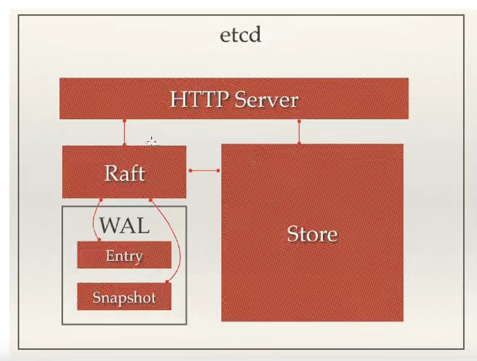
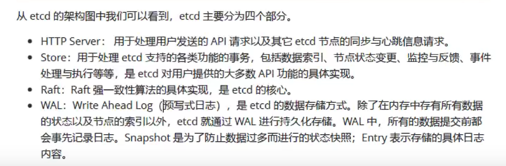
etcd集群
etcd作为一个高可以键值存储系统，天生就是为集群化而设计的。由于Raft算法在做决策时需要多数节点的投票，所有etcd一般部署集群推荐奇数节点，推荐3，5，7个节点构成一个集群。
搭建一个3节点集群实例
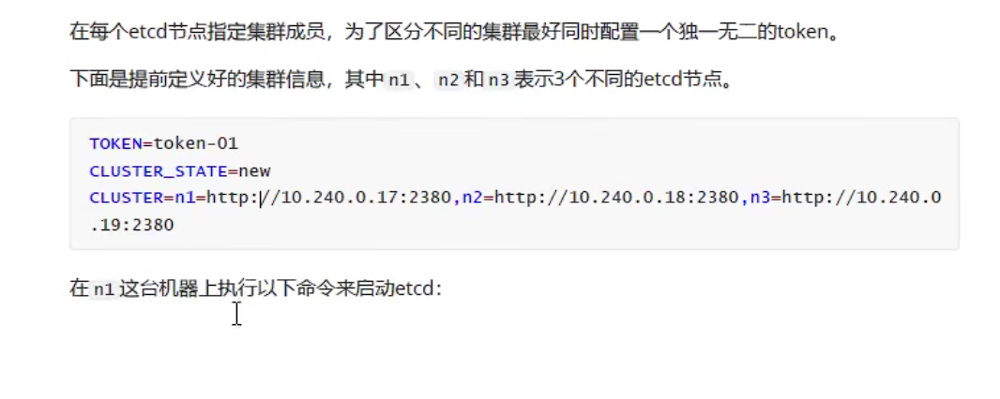
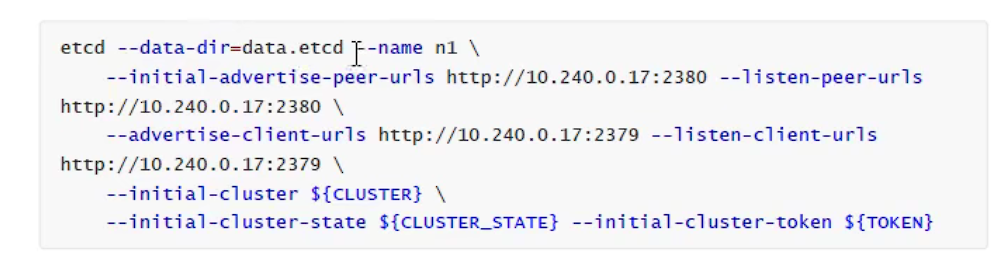
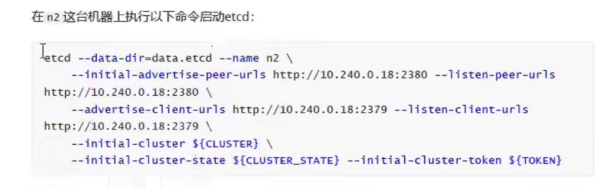
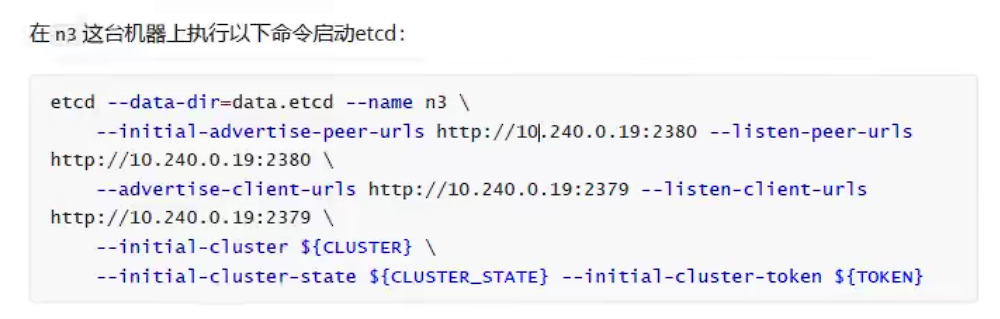
etcd服务端
文档
https://doczhcn.gitbook.io/etcd/index/index-1/configuration
允许外网访问
1 | export ETCD_LISTEN_CLIENT_URLS="http://0.0.0.0:2379" |
etcd客户端
官方客户端：https://github.com/etcd-io/etcd
1 | go get go.etcd.io/etcd/client/v3 |
实例
1 | package main |
1 | $ ./etcd.exe |
使用etcd优化项目代码
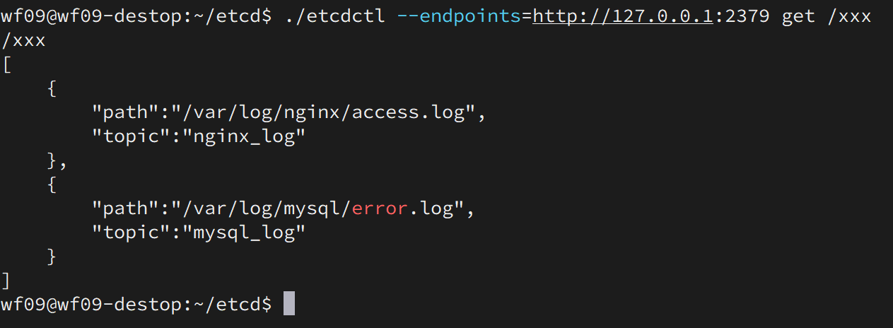
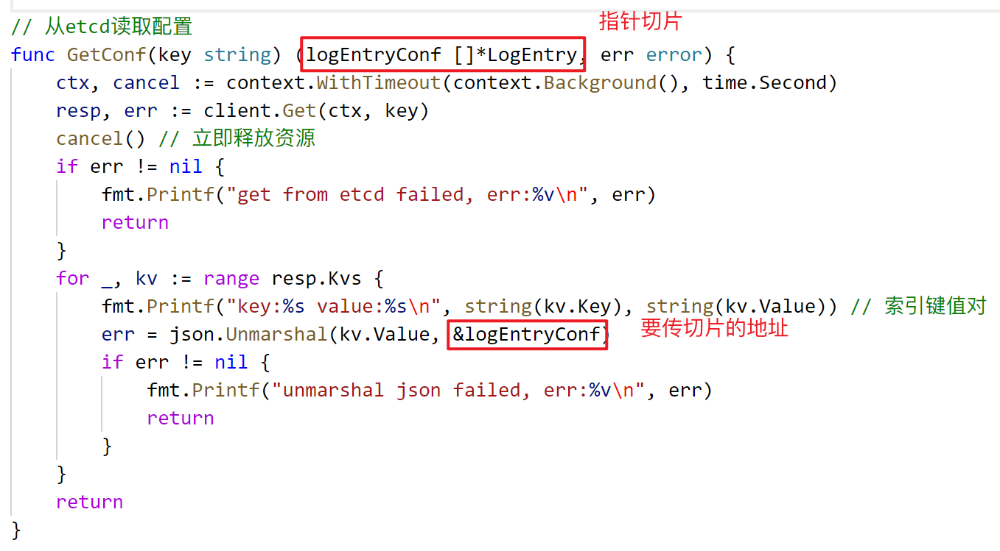
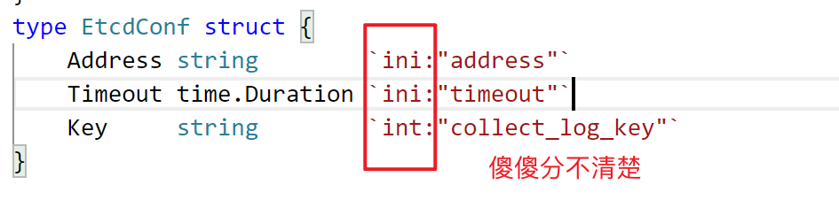
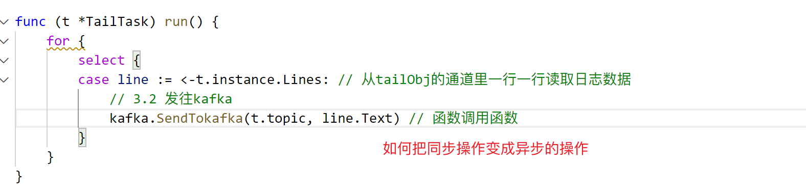